Building impactful brand systems, corporate visual identities, and premium stationery mockups. I focus on combining deep color psychology with timeless typography to craft strategic narratives that connect businesses with their audiences
 1.png)
A custom typography and branding identity project designed for imtenan. The concept centers on crafting an exclusive visual language through a custom-built font, seamlessly blending organic geometries into logos and iconography that communicate the brand's core values.



A comprehensive identity overhaul for the military museum of the chinese people's revolution. The visual strategy focuses on reviving historic narratives through bold typography and unified design systems, spanning dynamic promotional posters, editorial layouts, and immersive interactive catalogs.



A comprehensive visual identity design for Hawada, a premium arabic coffee brand. The visual strategy seamlessly blends traditional arabic calligraphy with modern minimalist geometries, extending across custom corporate stationery, elegant packaging elements, and a tailored die-cut calendar system.


